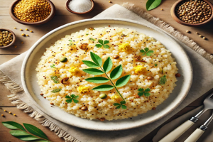

Upma Recipe

Ingredients
- 1 cup semolina (rava)
- 1 tablespoon oil
- 1/2 teaspoon mustard seeds
- 1 small onion, finely chopped
- 1/4 teaspoon turmeric powder
- 1/4 cup peas (optional)
- 1 small carrot, grated
- 2 cups water
- Salt to taste
- Chopped coriander leaves for garnish
Steps to Prepare
- Heat oil in a pan and add mustard seeds. Let them splutter.
- Add onions, grated carrots, and peas. Sauté until soft.
- Add turmeric powder and salt, then mix well.
- Add water to the pan and bring to a boil.
- Slowly add the semolina, stirring continuously to avoid lumps.
- Cover the pan and let it cook on low heat for 5 minutes.
- Garnish with chopped coriander leaves and serve hot!